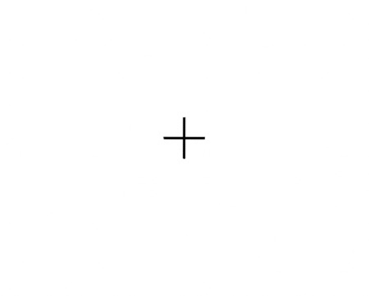
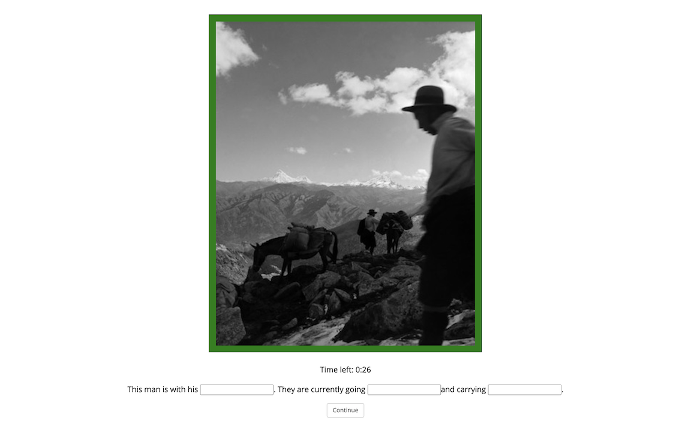

<!DOCTYPE html>
<html>
  
<head>
<title>My experiment</title>
<script src="jspsych-6.1.0/jspsych.js" type="text/javascript"></script>
<script src="jspsych-6.1.0/plugins/jspsych-html-button-response.js" type="text/javascript"></script>
<script src="jspsych-6.1.0/plugins/jspsych-html-keyboard-response.js" type="text/javascript"></script>
<script src="jspsych-6.1.0/plugins/jspsych-external-html.js" type="text/javascript"></script>
<script src="jspsych-6.1.0/plugins/jspsych-survey-text.js" type="text/javascript"></script>
<!-- <script src="jspsych-survey-html-form_time_modified_new2.js" type="text/javascript"></script> -->
<script src="jspsych-survey-html-form_time_modified_new2_delay_submit_button.js" type="text/javascript"></script>

<script src="jspsych-6.1.0/plugins/jspsych-image-slider-response1.js" type="text/javascript"></script>
<script src="jspsych-6.1.0/plugins/jspsych-image-keyboard-response_no_borders.js" type="text/javascript"></script>
<script src="jspsych-6.1.0/plugins/jspsych-image-keyboard-response_Original.js" type="text/javascript"></script>


<script src="jspsych-6.1.0/plugins/jspsych-video-button-response.js" type="text/javascript"></script>
<script src="jspsych-6.1.0/plugins/jspsych-instructions.js" type="text/javascript"></script>
<script src="jspsych-6.1.0/plugins/jspsych-fullscreen.js" type="text/javascript"></script>
<script src="jspsych-survey-multi-choice_modified_button_delay.js" type="text/javascript"></script>
<!-- <script src="jspsych-survey-multi-choice_modified_2.js" type="text/javascript"></script> -->
<!-- <script src="jspsych-6.1.0/plugins/jspsych-survey-multi-choice.js" type="text/javascript"></script> -->


<script src="text_madlibs_FINAL.js"></script>
<script src="order_cond_3random.js"></script>
<script src="condition_order2.js"></script>
<script src="colors_for_border2.js"></script>
<script src="memory_cond_3random.js"></script>

<script src="jspsych-6.1.0/plugins/jspsych-call-function.js"></script>
<script src='https://ajax.googleapis.com/ajax/libs/jquery/2.2.4/jquery.min.js'></script>


<script src="consent_nat_new.js"></script>

<link href="jspsych-6.1.0/css/jspsych_updated.css" rel="stylesheet" type="text/css" />


</head>

<!-- <style>
  /* img  {
  border: 1px solid black;
  padding: 15px 15px 15px 15px;
  background-color: rgb(48, 197, 197); 
} */
img {
  position: left;
}
</style> -->


<script>

var participant = jsPsych.data.getURLVariable('participant');
var participant = Number(participant)
var participant = 49
var subject_id = jsPsych.data.getURLVariable('PROLIFIC_PID');
var study_id = jsPsych.data.getURLVariable('STUDY_ID');
var session_id = jsPsych.data.getURLVariable('SESSION_ID');
console.log(participant)
function random_item(items)
{return items[Math.floor(Math.random()*items.length)];   }
function shuffle(a) {
    var j, x, i;
    for (i = a.length - 1; i > 0; i--) {
        j = Math.floor(Math.random() * (i + 1));
        x = a[i];
        a[i] = a[j];
        a[j] = x;
    }
    return a;}

slider_side_array = [2, 1, 1, 2, 2, 2, 1, 1, 2, 1, 1, 1, 1, 1, 1, 2, 1, 2, 2, 2, 1, 2,
      1, 1, 1, 1, 1, 1, 2, 1, 1, 1, 2, 1, 1, 1, 2, 2, 2, 2, 2, 2, 1, 2,
      2, 2, 1, 2, 1, 1, 2, 2, 2, 2, 1, 2, 1, 1, 2, 2, 1, 1, 1, 2, 1, 2,
      2, 2, 1, 2, 2, 1, 1, 2, 2, 2, 1, 2, 2, 1, 1, 2, 2, 1, 2, 1, 1, 2,
      2, 1, 2, 2, 1, 1, 1, 2, 2, 1, 1, 1]
//var slider_side = random_item([1,2]) //randomly choosing from 1 or 2
shuffle(slider_side_array)

var color_array = ['blue','red'] 

shuffle(color_array) //to change the order
var self_color= color_array[0] 
var other_color= color_array[1] 
// for memory test
var mem_opt = shuffle(['f','j'])
var old_key = mem_opt[0]
var new_key = mem_opt[1]

const t_= new Date();
let time_start = t_.getTime();
jsPsych.data.addProperties({
        time_start: time_start})


jsPsych.data.addProperties({
        subject_id: subject_id,
        study_id: study_id,
        session_id: session_id,
        participant: participant,
        self_color: self_color,
        other_color: other_color,
        old_key: old_key,
        new_key: new_key,

              });


//var question_order = order_options[participant-1]['order'] //doing -1 because the php starts at 1 but we want it to start at 0
var questions = questions
var question_order = []
var data_sample_size = 60; // can change to suit your needs

// get the condition of stimuli for the subject 
var c1 = 0 //starting them all at 0 and then will iterate
var c2 = 0
var c3 = 0
var condition_assignment = condition_order_by_subj[participant-1]['order_cond']
for(let i = 0; i < data_sample_size; i++){
    c = condition_assignment[i]

    if (c == 1) {
        cc = 'cond1';
        question_order.push(order_options[participant-1][cc][c1]);
        var c1 = c1 + 1}
    else if (c==2) {
      cc = 'cond2';
      question_order.push(order_options[participant-1][cc][c2]);
      var c2 = c2 + 1}
    else if (c==3) {
      cc = 'cond3';
      question_order.push(order_options[participant-1][cc][c3]);
      var c3 = c3 + 1}
    //question_order.push(order_options[participant-1][cc][i])
    }


//alert(condition_assignment)
var all_stimuli = []; 

// randomly assign a condition
//var condition_assignment = jsPsych.randomization.sampleWithoutReplacement(['LIST1', 'LIST2'], 1)[0];
var list_val = jsPsych.randomization.sampleWithoutReplacement(['LIST1'], 1)[0];

// jsPsych.data.addProperties({
//     list_val: list_val
//   });


var all_img = []; 
var all_ML1 = []
var all_ML2 = []
var all_ML3 = []
var all_ML1x = []
var all_ML2x = []
var all_ML3x = []
var other_ML1 = []
var other_ML2 = []
var other_ML3 = []

var list_1_block1 = []
var list_1_ML1 = []
var list_1_ML2 = []
var list_1_ML3 = []
var list_1_ML1x = []
var list_1_ML2x = []
var list_1_ML3x = []

var list_1_Other_ML1 = []
var list_1_Other_ML2 = []
var list_1_Other_ML3 = []
var list_cond = []
var list1_cond = []
var border_color = []
var slider_side = []


var vals = [0,1,2]; // need to choose between the 3 random options that exist

for(let i = 0; i < data_sample_size; i++){
      //alert(i)
      const random = Math.floor(Math.random() * vals.length);
      k = question_order[i];

      // THIS NEEDS TO CHANGE ONCE INPUTS HAVE BEEN ADDED RANDOMLY? 
      list_1_block1.push({stimulus: questions[k].img});
      list_1_ML1.push({ML1: questions[k].ML1});
      list_1_ML2.push({ML2: questions[k].ML2});
      list_1_ML3.push({ML3: questions[k].ML3});
      list_1_ML1x.push({ML1x: questions[k].ML1x}); //just the text no periods or spaces
      list_1_ML2x.push({ML2x: questions[k].ML2x});
      list_1_ML3x.push({ML3x: questions[k].ML3x});      
      list1_cond.push({condition: condition_assignment[i]});
      list_1_Other_ML1.push({input1: questions[k].input1[random]});
      list_1_Other_ML2.push({input2: questions[k].input2[random]});
      list_1_Other_ML3.push({input3: questions[k].input3[random]});
      border_color.push({border_color: colors[k]})
      slider_side.push(slider_side_array[i])
      
}

//////////////////////////////////////

if (list_val == "LIST1") {
    all_img.push(list_1_block1);
    all_ML1.push(list_1_ML1);
    all_ML2.push(list_1_ML2);
    all_ML3.push(list_1_ML3);
    all_ML1x.push(list_1_ML1x);
    all_ML2x.push(list_1_ML2x);
    all_ML3x.push(list_1_ML3x);   
    other_ML1.push(list_1_Other_ML1);
    other_ML2.push(list_1_Other_ML2);
    other_ML3.push(list_1_Other_ML3);
    list_cond.push(list1_cond)

} else if (list_val == "LIST2") {
    all_img.push(list_2_block1, list_2_block2);
} else if (list_val == "LIST3") {
    all_img.push(list_3_block1, list_3_block2);
} else if (list_val == "LIST4") {
    all_img.push(list_4_block1, list_4_block2);
}

// flatten the all_stimuli array
all_img = all_img.flat();
all_ML1 = all_ML1.flat();
all_ML2 = all_ML2.flat();
all_ML3 = all_ML3.flat();
all_ML1x = all_ML1x.flat();
all_ML2x = all_ML2x.flat();
all_ML3x = all_ML3x.flat();
other_ML1 = other_ML1.flat();
other_ML2 = other_ML2.flat();
other_ML3 = other_ML3.flat();
list_cond = list_cond.flat();
border_color = border_color.flat()
slider_side = slider_side.flat()


var timeline_vars = [];
//var timeline = []
var timeline_temp = []

// for each element in timeline1, take the stimulus from this object,
// and the stimulus2 from the object with the same index in the timeline2 array,
// then combine these into the same object, and add that object on to the timeline_vars array
all_img.forEach(function(el, ind) {
  timeline_vars.push({stimulus: el.stimulus, ML1: all_ML1[ind].ML1, ML2: all_ML2[ind].ML2, ML3: all_ML3[ind].ML3, ML1x: all_ML1x[ind].ML1x, ML2x: all_ML2x[ind].ML2x, ML3x: all_ML3x[ind].ML3x, other_input1: other_ML1[ind].input1, other_input2: other_ML2[ind].input2, other_input3: other_ML3[ind].input3, condition: list_cond[ind].condition, border_color: border_color[ind].border_color, slider_side: slider_side[ind]});
})

///////////////// PRACTICE TRIAL ////////////////////////

var image_block_TRIAL = {
  type: 'image-keyboard-response',
  stimulus: 'images/WB_15_reshaped.jpeg',
  trial_duration: 5000,
  //border_color: 'green',
  border_color:false,
  response_ends_trial: false,
  }

  var block_selfML_condition_TRIAL = {
    type: "survey-html-form",
    trial_duration: 60000,
    delay_time:20000,
    on_load: function(){
          var wait_time = 40000; //60000 when want the full range // in milliseconds
          var start_time = performance.now();
          //document.querySelector('button').disabled = true;
          var interval = setInterval(function(){
          var time_left = wait_time - (performance.now() - start_time);
          var minutes = Math.floor(time_left / 1000 / 60);
          var seconds = Math.floor((time_left - minutes*1000*60)/1000);
          var seconds_str = seconds.toString().padStart(2,'0');
          document.querySelector('#clock').innerHTML = minutes + ':' + seconds_str
          if(time_left <= 0){
              document.querySelector('#clock').innerHTML = "0:00";
              //document.querySelector('button').disabled = false;
              clearInterval(interval);
    }
    },
    250)
          },
    html: function() {

                //return  '' + `<p> Time left: <span id="clock">1:00</span> </p>` + 'This man is with his <input name="first" type="text" STYLE="color:'+ self_color + '; font-family: "Comic Sans MS"; font-size: 90 required>' + '. They are currently going <input name="second" type="text" STYLE="color:'+ self_color + ';  font-family: "Comic Sans MS" font-size: 60  required>' + 'and carrying <input name="third" type="text" STYLE="color:'+ self_color + ';  font-family: "Comic Sans MS"; font-size: 90 required>' + '.' + '</p>' 
                return  '' + '<br>' + `<p> Time left: <span id="clock">1:00</span> </p>` + 'This man is with his <input name="first" type="text" STYLE="color:'+ self_color + '; font-family: "Comic Sans MS"; font-size: 90 required>' + '. They are currently going <input name="second" type="text" STYLE="color:'+ self_color + ';  font-family: "Comic Sans MS" font-size: 60  required>' + 'and carrying <input name="third" type="text" STYLE="color:'+ self_color + ';  font-family: "Comic Sans MS"; font-size: 90 required>' + '.' + '</p>' 

            },
    response_ends_trial: false,
    post_trial_gap: 1000,
    on_finish: function(data){
              var  self_ML =  `<font color=black>` + 'This man is with his ' + `<span style="color:` + self_color + `;">` + data.response.first + `</span>` + 
      '. They are currently going ' + `<span style="color:` + self_color + `;">` + data.response.second + `</span>` + 
      ' and carrying ' + `<span style="color:` + self_color + `;">` + data.response.third + `</span>` 

              data.self_ML = self_ML 
            },

  };

  var block_selfML_condition_TRIAL = {
    type: "survey-html-form",
    trial_duration: 60000,
    delay_time:30000,
    on_load: function(){
          var wait_time = 40000; //60000 when want the full range // in milliseconds
          var start_time = performance.now();
          //document.querySelector('button').disabled = true;
          var interval = setInterval(function(){
          var time_left = wait_time - (performance.now() - start_time);
          var minutes = Math.floor(time_left / 1000 / 60);
          var seconds = Math.floor((time_left - minutes*1000*60)/1000);
          var seconds_str = seconds.toString().padStart(2,'0');
          document.querySelector('#clock').innerHTML = minutes + ':' + seconds_str
          if(time_left <= 0){
              document.querySelector('#clock').innerHTML = "0:00";
              //document.querySelector('button').disabled = false;
              clearInterval(interval);
    }
    },
    250)
          },
    html: function() {

                // modifying the color
                //return  '' + `<p> Time left: <span id="clock">1:00</span> </p>` +jsPsych.timelineVariable('ML1', true)+'<input name="first" type="text" STYLE="color:'+ self_color + '; font-family: "Comic Sans MS"; font-size: 90 required>' + jsPsych.timelineVariable('ML2',true) + '<input name="second" type="text" STYLE="color:'+ self_color + ';  font-family: "Comic Sans MS" font-size: 60  required>' + jsPsych.timelineVariable('ML3',true) + '<input name="third" type="text" STYLE="color:'+ self_color + ';  font-family: "Comic Sans MS"; font-size: 90 required>' + '.' + '</p>' 
                //return  '' +'<br>' +'<br>'+ `<p> Time left: <span id="clock">1:00</span> </p>` +jsPsych.timelineVariable('ML1', true)+'<input name="first" type="text" STYLE="color:'+ self_color + '; font-family: "Comic Sans MS"; font-size: 90 required>' + jsPsych.timelineVariable('ML2',true) + '<input name="second" type="text" STYLE="color:'+ self_color + ';  font-family: "Comic Sans MS" font-size: 60  required>' + jsPsych.timelineVariable('ML3',true) + '<input name="third" type="text" STYLE="color:'+ self_color + ';  font-family: "Comic Sans MS"; font-size: 90 required>' + '.' + '</p>' 
                return  '' + '<br>' + `<p> Time left: <span id="clock">1:00</span> </p>` + 'This man is with his <input name="first" type="text" STYLE="color:'+ self_color + '; font-family: "Comic Sans MS"; font-size: 90 required>' + '. They are currently going <input name="second" type="text" STYLE="color:'+ self_color + ';  font-family: "Comic Sans MS" font-size: 60  required>' + 'and carrying <input name="third" type="text" STYLE="color:'+ self_color + ';  font-family: "Comic Sans MS"; font-size: 90 required>' + '.' + '</p>' 

            },
    data: { img: jsPsych.timelineVariable('stimulus'), condition: jsPsych.timelineVariable('condition'), ML1: jsPsych.timelineVariable('ML1'), ML2: jsPsych.timelineVariable('ML2'), ML3: jsPsych.timelineVariable('ML3'), 
    condition: jsPsych.timelineVariable('condition')},

    response_ends_trial: false,
    post_trial_gap: 1000,
    on_finish: function(data){
              //var self_ML = jsPsych.timelineVariable('ML1',true) + data.response.first + jsPsych.timelineVariable('ML2',true) + data.response.second + jsPsych.timelineVariable('ML3',true) + data.response.third
              //var self_ML_pure = jsPsych.timelineVariable('ML1',true) + data.response.first  + jsPsych.timelineVariable('ML2',true) + data.response.second + jsPsych.timelineVariable('ML3',true) + data.response.third +  '.'
              //var self_ML = `<font color=#000000;>` + jsPsych.timelineVariable('ML1',true) + `<strong>` + `<font color=`+ self_color + `;>`+ data.response.first + `</strong>` + `<font color=#000000;>` + jsPsych.timelineVariable('ML2',true) + `<strong>` + `<font color=`+ self_color + `;>`+ data.response.second + `</strong>` + `<font color=#000000;>`+ jsPsych.timelineVariable('ML3',true) + `<strong>` + `<font color=`+ self_color + `;>`+ data.response.third + `</strong>` + `<font color=#000000;>`+ '.'
              //var self_ML = jsPsych.timelineVariable('ML1',true) + `<span style="color:` + self_color + `;">` + data.response.first + `</span>` + 
      //jsPsych.timelineVariable('ML2',true) + `<span style="color:` + self_color + `;">` + data.response.second + `</span>` + 
      //jsPsych.timelineVariable('ML3',true) + `<span style="color:` + self_color + `;">` + data.response.third + `</span>` + '.'

              //data.self_ML = self_ML 
              //data.self_ML_pure = self_ML_pure
              data.input1= data.response.first
              data.input2= data.response.second
              data.input3= data.response.third

            },
  };


  var block_otherML_condition_TRIAL = {
    type: "survey-html-form",
    trial_duration: 20000,
    delay_time:10000,
    data: { img: jsPsych.timelineVariable('stimulus'), ML1: jsPsych.timelineVariable('ML1'), ML2: jsPsych.timelineVariable('ML2'), ML3: jsPsych.timelineVariable('ML3'), condition: jsPsych.timelineVariable('condition')},
        html: function() {

            return ''  + '<br>' + '<br>' + '<br>' + 
            '<p>' + 'This man is with his '+ 
            `<font color=`+ other_color + `>` + 
            'employee'+ `</font>` + 
            '. They are currently going ' + `<font color=`+ other_color + `>` + ' back to the circus '+ `</font>` +
            'and carrying' + `<font color=`+ other_color + `>` + 
            ' circus supplies that they will use to perform tomorrow' + 
            `<font color=`+ other_color + `</font>` +
            '. </p>'
        },
        post_trial_gap: 1000,
              }

              
  

var fixation_TRIAL = {
  type: 'image-keyboard-response',
  stimulus: "images/fixation_cross.jpeg",
  //border_color:'green',
  border_color:false,
  choices: jsPsych.NO_KEYS,
  trial_duration: 3000 // in ms
}; 


  var appraisal_slider_response_SMLfirst_TRIAL = {
  type: 'survey-multi-choice',
  trial_duration: 20000,
  delay_time: 10000,
  data: { img: jsPsych.timelineVariable('stimulus'), condition: jsPsych.timelineVariable('condition'), ML1: jsPsych.timelineVariable('ML1'), ML2: jsPsych.timelineVariable('ML2'), ML3: jsPsych.timelineVariable('ML3')},
  preamble :'',
  questions: function(data){

        var first_1 =  jsPsych.data.get().last(2).values()[0].input1;
        var first_2 =  'employee';
        var second_1 = jsPsych.data.get().last(2).values()[0].input2;
        var second_2 = 'back to the circus';
        var third_1 = jsPsych.data.get().last(2).values()[0].input3;
        var third_2 = 'circus supplies that they will use to perform tomorrow';
      
    return [
    {
      prompt: 'This man is with his'  , 
      name: 'ML1-choice', 
      options: [ first_1,first_2], 
      required: true,
      horizontal: false
    }, 
    {
      prompt: 'They are currently going' , 
      name: 'ML2-choice', 
      options: [second_1, second_2], 
      required: true,
      horizontal: false
    },
    {
      prompt:  'and carrying', 
      name: 'ML3-choice', 
      options: [third_1, third_2], 
      required: true,
      horizontal: false
    }
  ]},
  on_finish: function(data){
              // data.other_ML = jsPsych.timelineVariable('ML1',true) + `<span style="color:` + other_color + `;">` + jsPsych.timelineVariable('other_input1',true) + `</span>` + 
              // jsPsych.timelineVariable('ML2',true) + `<span style="color:` + other_color + `;">` + jsPsych.timelineVariable('other_input2',true) + `</span>` + 
              // jsPsych.timelineVariable('ML3',true) + `<span style="color:` + other_color + `;">` + jsPsych.timelineVariable('other_input3',true) + `</span>` + '.'
              // data.other_ML_pure = jsPsych.timelineVariable('ML1',true) + jsPsych.timelineVariable('other_input1',true) +
              // jsPsych.timelineVariable('ML2',true) + jsPsych.timelineVariable('other_input2',true) + 
              // jsPsych.timelineVariable('ML3',true) + jsPsych.timelineVariable('other_input3',true) 
              saveData("_data",jsPsych.data.get().csv())
              save_temp_data_csv()

            }
};


///////////////// EXPERIMENT STARTS HERE /////////////////


  var image_block = {
  type: 'image-keyboard-response',
  stimulus: jsPsych.timelineVariable('stimulus') ,
 
  trial_duration: 5000,
  //border_color: jsPsych.timelineVariable('border_color'),
  border_color: false,
  data: { img: jsPsych.timelineVariable('stimulus'), condition: jsPsych.timelineVariable('condition')},
  response_ends_trial: false,
  }
  
  
  var block_selfML_condition = {
    type: "survey-html-form",
    trial_duration: 60000,
    delay_time:30000,
    on_load: function(){
          var wait_time = 40000; //60000 when want the full range // in milliseconds
          var start_time = performance.now();
          //document.querySelector('button').disabled = true;
          var interval = setInterval(function(){
          var time_left = wait_time - (performance.now() - start_time);
          var minutes = Math.floor(time_left / 1000 / 60);
          var seconds = Math.floor((time_left - minutes*1000*60)/1000);
          var seconds_str = seconds.toString().padStart(2,'0');
          document.querySelector('#clock').innerHTML = minutes + ':' + seconds_str
          if(time_left <= 0){
              document.querySelector('#clock').innerHTML = "0:00";
              //document.querySelector('button').disabled = false;
              clearInterval(interval);
    }
    },
    250)
          },
    html: function() {

                // modifying the color
                //return  '' + `<p> Time left: <span id="clock">1:00</span> </p>` +jsPsych.timelineVariable('ML1', true)+'<input name="first" type="text" STYLE="color:'+ self_color + '; font-family: "Comic Sans MS"; font-size: 90 required>' + jsPsych.timelineVariable('ML2',true) + '<input name="second" type="text" STYLE="color:'+ self_color + ';  font-family: "Comic Sans MS" font-size: 60  required>' + jsPsych.timelineVariable('ML3',true) + '<input name="third" type="text" STYLE="color:'+ self_color + ';  font-family: "Comic Sans MS"; font-size: 90 required>' + '.' + '</p>' 
                return  '' +'<br>' +'<br>'+ `<p> Time left: <span id="clock">1:00</span> </p>` +jsPsych.timelineVariable('ML1', true)+'<input name="first" type="text" STYLE="color:'+ self_color + '; font-family: "Comic Sans MS"; font-size: 90 required>' + jsPsych.timelineVariable('ML2',true) + '<input name="second" type="text" STYLE="color:'+ self_color + ';  font-family: "Comic Sans MS" font-size: 60  required>' + jsPsych.timelineVariable('ML3',true) + '<input name="third" type="text" STYLE="color:'+ self_color + ';  font-family: "Comic Sans MS"; font-size: 90 required>' + '.' + '</p>' 

            },
    data: { img: jsPsych.timelineVariable('stimulus'), condition: jsPsych.timelineVariable('condition'), ML1: jsPsych.timelineVariable('ML1'), ML2: jsPsych.timelineVariable('ML2'), ML3: jsPsych.timelineVariable('ML3'), 
    condition: jsPsych.timelineVariable('condition')},

    response_ends_trial: false,
    post_trial_gap: 1000,
    on_finish: function(data){
              //var self_ML = jsPsych.timelineVariable('ML1',true) + data.response.first + jsPsych.timelineVariable('ML2',true) + data.response.second + jsPsych.timelineVariable('ML3',true) + data.response.third
              var self_ML_pure = jsPsych.timelineVariable('ML1',true) + data.response.first  + jsPsych.timelineVariable('ML2',true) + data.response.second + jsPsych.timelineVariable('ML3',true) + data.response.third +  '.'
              //var self_ML = `<font color=#000000;>` + jsPsych.timelineVariable('ML1',true) + `<strong>` + `<font color=`+ self_color + `;>`+ data.response.first + `</strong>` + `<font color=#000000;>` + jsPsych.timelineVariable('ML2',true) + `<strong>` + `<font color=`+ self_color + `;>`+ data.response.second + `</strong>` + `<font color=#000000;>`+ jsPsych.timelineVariable('ML3',true) + `<strong>` + `<font color=`+ self_color + `;>`+ data.response.third + `</strong>` + `<font color=#000000;>`+ '.'
              var self_ML = jsPsych.timelineVariable('ML1',true) + `<span style="color:` + self_color + `;">` + data.response.first + `</span>` + 
      jsPsych.timelineVariable('ML2',true) + `<span style="color:` + self_color + `;">` + data.response.second + `</span>` + 
      jsPsych.timelineVariable('ML3',true) + `<span style="color:` + self_color + `;">` + data.response.third + `</span>` + '.'

              data.self_ML = self_ML 
              data.self_ML_pure = self_ML_pure
              data.input1= data.response.first
              data.input2= data.response.second
              data.input3= data.response.third

            },
  };

 

var appraisal_slider_response_SMLfirst = {
  type: 'survey-multi-choice',
  trial_duration: 20000,
  delay_time: 10000,
  data: { img: jsPsych.timelineVariable('stimulus'), condition: jsPsych.timelineVariable('condition'), ML1: jsPsych.timelineVariable('ML1'), ML2: jsPsych.timelineVariable('ML2'), ML3: jsPsych.timelineVariable('ML3')},
  preamble : function(data){
    return   ''} ,
    //''} ,


  questions: function(data){

      if (jsPsych.timelineVariable('slider_side') === 1){
        var first_1 =  jsPsych.data.get().last(2).values()[0].input1;
        var first_2 =  jsPsych.timelineVariable('other_input1',true);
        var second_1 = jsPsych.data.get().last(2).values()[0].input2;
        var second_2 = jsPsych.timelineVariable('other_input2',true);
        var third_1 = jsPsych.data.get().last(2).values()[0].input3;
        var third_2 = jsPsych.timelineVariable('other_input3',true);
          }
            else{
              var first_2 =  jsPsych.data.get().last(2).values()[0].input1 ;
              var first_1 =  jsPsych.timelineVariable('other_input1',true);
              var second_2 = jsPsych.data.get().last(2).values()[0].input2;
              var second_1 = jsPsych.timelineVariable('other_input2',true);
              var third_2 =  jsPsych.data.get().last(2).values()[0].input3;
              var third_1 =  jsPsych.timelineVariable('other_input3',true) ;
            }
      
    return [
    {
      prompt: jsPsych.timelineVariable('ML1x',true)  , 
      name: 'ML1-choice', 
      options: [ first_1,first_2], 
      required: true,
      horizontal: false
    }, 
    {
      prompt: jsPsych.timelineVariable('ML2x',true) , 
      name: 'ML2-choice', 
      options: [second_1, second_2], 
      required: true,
      horizontal: false
    },
    {
      prompt:  jsPsych.timelineVariable('ML3x',true), 
      name: 'ML3-choice', 
      options: [third_1, third_2], 
      required: true,
      horizontal: false
    }
  ]},
  on_finish: function(data){
              data.other_input1 = jsPsych.timelineVariable('other_input1',true),
              data.other_input2 = jsPsych.timelineVariable('other_input2',true),
              data.other_input3 = jsPsych.timelineVariable('other_input3',true),
              data.self_input1 = jsPsych.data.get().last(2).values()[0].input1;
              data.self_input2 = jsPsych.data.get().last(2).values()[0].input2;
              data.self_input3 = jsPsych.data.get().last(2).values()[0].input3;
              data.other_ML = jsPsych.timelineVariable('ML1',true) + `<span style="color:` + other_color + `;">` + jsPsych.timelineVariable('other_input1',true) + `</span>` + 
              jsPsych.timelineVariable('ML2',true) + `<span style="color:` + other_color + `;">` + jsPsych.timelineVariable('other_input2',true) + `</span>` + 
              jsPsych.timelineVariable('ML3',true) + `<span style="color:` + other_color + `;">` + jsPsych.timelineVariable('other_input3',true) + `</span>` + '.'
              data.other_ML_pure = jsPsych.timelineVariable('ML1',true) + jsPsych.timelineVariable('other_input1',true) +
              jsPsych.timelineVariable('ML2',true) + jsPsych.timelineVariable('other_input2',true) + 
              jsPsych.timelineVariable('ML3',true) + jsPsych.timelineVariable('other_input3',true) 
              saveData("_data",jsPsych.data.get().csv())
              save_temp_data_csv()

            }
};


    // // to be used when the other ML came first so need to go back 2
    

var appraisal_slider_response_OMLfirst = {
  type: 'survey-multi-choice',
  trial_duration: 20000,
  delay_time: 10000,
  data: { img: jsPsych.timelineVariable('stimulus'), condition: jsPsych.timelineVariable('condition'), ML1: jsPsych.timelineVariable('ML1'), ML2: jsPsych.timelineVariable('ML2'), ML3: jsPsych.timelineVariable('ML3')},

  preamble : function(data){
    return  ''} , //''} ,


  questions: function(data){


      if (jsPsych.timelineVariable('slider_side') === 1){

        var first_1 =  jsPsych.data.get().last(1).values()[0].input1;
        var first_2 =  jsPsych.timelineVariable('other_input1',true);
        var second_1 = jsPsych.data.get().last(1).values()[0].input2;
        var second_2 = jsPsych.timelineVariable('other_input2',true);
        var third_1 = jsPsych.data.get().last(1).values()[0].input3;
        var third_2 = jsPsych.timelineVariable('other_input3',true);
          }
            else{
              var first_2 = jsPsych.data.get().last(1).values()[0].input1;
              var first_1 = jsPsych.timelineVariable('other_input1',true);
              var second_2 = jsPsych.data.get().last(1).values()[0].input2;
              var second_1 = jsPsych.timelineVariable('other_input2',true);
              var third_2 =  jsPsych.data.get().last(1).values()[0].input3;
              var third_1 =  jsPsych.timelineVariable('other_input3',true);
            }
      
    return [
    {
      prompt: jsPsych.timelineVariable('ML1x',true), 
      name: 'ML1-choice', 
      options: [ first_1,first_2], 
      required: false,
      horizontal: false
    }, 
    {
      prompt: jsPsych.timelineVariable('ML2x',true) , 
      name: 'ML2-choice', 
      options: [second_1, second_2], 
      required: true,
      horizontal: false
    },
    {
      prompt: jsPsych.timelineVariable('ML3x',true), 
      name: 'ML3-choice', 
      options: [third_1,third_2], 
      required: true,
      horizontal: false
    }
  ]},
  on_finish: function(data){
              data.other_input1 = jsPsych.timelineVariable('other_input1',true),
              data.other_input2 = jsPsych.timelineVariable('other_input2',true),
              data.other_input3 = jsPsych.timelineVariable('other_input3',true),
              data.self_input1 = jsPsych.data.get().last(1).values()[0].input1;
              data.self_input2 = jsPsych.data.get().last(1).values()[0].input2;
              data.self_input3 = jsPsych.data.get().last(1).values()[0].input3;
              data.other_ML = jsPsych.timelineVariable('ML1',true) + `<span style="color:` + other_color + `;">` + jsPsych.timelineVariable('other_input1',true) + `</span>` + 
              jsPsych.timelineVariable('ML2',true) + `<span style="color:` + other_color + `;">` + jsPsych.timelineVariable('other_input2',true) + `</span>` + 
              jsPsych.timelineVariable('ML3',true) + `<span style="color:` + other_color + `;">` + jsPsych.timelineVariable('other_input3',true) + `</span>` + '.'
              data.other_ML_pure = jsPsych.timelineVariable('ML1',true) + jsPsych.timelineVariable('other_input1',true) +
              jsPsych.timelineVariable('ML2',true) + jsPsych.timelineVariable('other_input2',true) + 
              jsPsych.timelineVariable('ML3',true) + jsPsych.timelineVariable('other_input3',true) 
              saveData("_data",jsPsych.data.get().csv())
              save_temp_data_csv()

            }
};


    var block_otherML_condition = {
    type: "survey-html-form",
        trial_duration: 20000,
        delay_time:10000,
        data: { img: jsPsych.timelineVariable('stimulus'), ML1: jsPsych.timelineVariable('ML1'), ML2: jsPsych.timelineVariable('ML2'), ML3: jsPsych.timelineVariable('ML3'), condition: jsPsych.timelineVariable('condition')},
        
        html: function() {

            //return '"'  + '<br>' + '<br>' + '<br>' + 
            return ''  + '<br>' + '<br>' + '<br>' + 

            '<p>' + jsPsych.timelineVariable('ML1', true)+ 
            `<font color=`+ other_color + `>` + 
            jsPsych.timelineVariable('other_input1',true) + 
            `</font>` + 
            jsPsych.timelineVariable('ML2',true) + 
            `<font color=`+ other_color + `>` + 
            jsPsych.timelineVariable('other_input2',true)+ 
            `</font>` +
            jsPsych.timelineVariable('ML3',true) + 
            `<font color=`+ other_color + `>` + 
            jsPsych.timelineVariable('other_input3',true) + 
            `<font color=`+ other_color + `>` +
            '. </p>'
        },
        
        post_trial_gap: 1000,
              }
 


var fixation = {
  type: 'image-keyboard-response',
  data: { img: jsPsych.timelineVariable('stimulus'), ML1: jsPsych.timelineVariable('ML1'), ML2: jsPsych.timelineVariable('ML2'), ML3: jsPsych.timelineVariable('ML3'), condition: jsPsych.timelineVariable('condition')},
  stimulus: "images/fixation_cross.jpeg",
  //border_color:jsPsych.timelineVariable('border_color'),
  border_color:false,
  choices: jsPsych.NO_KEYS,
  trial_duration: 3000 // in ms
}; 

var fixation_longer = {
  type: 'image-keyboard-response',
  stimulus: "images/fixation_cross.jpeg",
  //border_color:jsPsych.timelineVariable('border_color'),
  border_color:false,
  choices: jsPsych.NO_KEYS,
  trial_duration: 100 // in ms
}; 

var fixation_7 = {
    type: "survey-html-form",
    trial_duration: 7000,
    html: '<p>Next Trial Starting Soon</p>',
    response_ends_trial: false,
}
var practice_starting = {
    type: "survey-html-form",
    trial_duration: 2000,
    html: '<p>Practice Starting </p>',
    response_ends_trial: true,
}
var experiment_starting = {
    type: "survey-html-form",
    trial_duration: 10000,
    html: '<p>Practice Done! Click to begin the experiment. </p>',
    response_ends_trial: true,
}

  // use the stimul
  // use the stimuli array as your timeline variables array
  // this will repeat the trial for each object in your stimuli array, and use the appropriate stimulus value
  var arrayLength = all_img.length
  
  procedure_list = []
  for(let i = 0; i < arrayLength; i++){
      var condition_here= condition_assignment[i]; //THIS ASSUMES THIS CORRESPONDS WHICH IT SHOULD
      //alert(condition_here)
      

      if (condition_here === 1){
        var procedure_temp = {
          timeline: [image_block, block_selfML_condition,block_otherML_condition, appraisal_slider_response_SMLfirst, fixation_7], //eventually add the image_block at the end
          timeline_variables: timeline_vars.slice(i,i+1)}}
      if (condition_here === 2){
        var procedure_temp = {
          timeline: [image_block, block_otherML_condition ,block_selfML_condition, appraisal_slider_response_OMLfirst, fixation_7],
          timeline_variables: timeline_vars.slice(i,i+1)}}
      if (condition_here === 3){
        var procedure_temp = {
          timeline: [fixation_longer,block_otherML_condition,image_block, block_selfML_condition,  appraisal_slider_response_OMLfirst, fixation_7],
          timeline_variables: timeline_vars.slice(i,i+1)}}
      procedure_list.push(procedure_temp)}


var rest = {
  on_load: function(){
          var wait_time = 15000; //60000 when want the full range // in milliseconds
          var start_time = performance.now();
          //document.querySelector('button').disabled = true;
          var interval = setInterval(function(){
          var time_left = wait_time - (performance.now() - start_time);
          var minutes = Math.floor(time_left / 1000 / 60);
          var seconds = Math.floor((time_left - minutes*1000*60)/1000);
          var seconds_str = seconds.toString().padStart(2,'0');
          document.querySelector('#clock').innerHTML = minutes + ':' + seconds_str
          if(time_left <= 0){
              document.querySelector('#clock').innerHTML = "0:00";
              //document.querySelector('button').disabled = false;
              clearInterval(interval);
    }
    },
    250)
          },
    type: "html-keyboard-response", //jsPsychHtmlKeyboardResponse,
    stimulus: `<p> Suggested time left: <span id="clock">1:00</span> </p>` + "You have completed 15 trials. Feel free to take a break now before you continue. Press any key to continue."
    };

var prolific_id_trial = {
  type: "survey-text",
  questions: [
    {prompt: 'Please enter your Prolific ID:', name: 'pro_id_manual', required: true}
  ], 
}
var welcome = {
    type: "html-keyboard-response", //jsPsychHtmlKeyboardResponse,
    stimulus: "Welcome to the experiment. Press any key to begin. Please note that you will be invited to do a quick follow-up in a week.",
    on_finish: function(){
      saveData("_data",jsPsych.data.get().csv())
      save_temp_data_csv()
    }
    };

var enter_fullscreen = {
  type: "fullscreen",
  fullscreen_mode: true
}

var consent_form = {
    type: "survey-html-form",
    preamble: consent_nat[0].consent_form_naturalistic,
    // html: consent_nat[0].consent_form_naturalistic + "<p><input type=checkbox id=consent_checkbox required/>I agree to take part in this study. </p>"
    html: "<p><input type=checkbox id=consent_checkbox required/> <strong> I agree to take part in this study. </strong> </p>"
};


var instructions_block = {
        type: "html-keyboard-response",
        stimulus: "<p>In this experiment, you will see a photograph and a description. Some of the description will be missing.  Each description will have <strong>3 blanks</strong> and your job is to <strong>fill in these blanks</strong> based on your interpretation of what is happening in the photograph. There is <strong>no right or wrong answer.</strong> Please fill in the blanks based on what you see and think is happening in the corresponding photo. Please consider each photo independently (i.e., there is no intentional relationship between the series of photos that you see). </p>" + 
            "<p>Press any key to continue.</p>",
    };

var instructions_block2 = {
        type: "html-keyboard-response",
        stimulus: "<p>There will be times where you will see that someone else filled in the blanks for you. Please read and consider what they put in the blanks. </p>" + 
            "<p>Press any key to continue.</p>",
    };

var instructions_block3 = {
        type: "html-keyboard-response",
        stimulus: "<p>The order in which you are shown an image, are asked to fill in the blanks or are shown what someone else put will vary. The next couple of slides will provide detail as to what this will look like.</p>" + 
            "<p>Press any key to continue.</p>",
    };


var instructions_block4 = {
  type: 'video-button-response',
  sources: ['video/instructions_new_appraisal1.mp4'],
  choices: ['yes, I understand'],
  button_html: '<button class="jspsych-btn">%choice%!</button>',
  margin_vertical: '10px',
  margin_horizontal: '8px',
  prompt: 'Turn up your volume to hear the experiment description. There will also be text throughout the video. Start the video by interacting with it.',
  width: 1000,
  //height: 1000,
  autoplay: false,
  controls: true,
  //start: 8,
  //stop: 9,
  rate: 1,
  //trial_duration: 2000,

  response_ends_trial: true
}

// var appraisal_slider_response_TRAINING = {
//     type: "image-slider-response",
//     trial_duration: 15000,
//     min:0,
//     max:90,
//     slider_start:90,
//     step:1,
//     stimulus: 'images/WB_15_reshaped.jpeg',
//     //border_color: 'green',
//     border_color:false,
//     labels: function(data){
//       other_ML = 'OTHER DESCRIPTION',
//       temp = 'YOUR DESCRIPTION',
//         empty_here = "";
//         if (jsPsych.timelineVariable('slider_side') === 1){
//                 return [temp, empty_here, empty_here, other_ML]
//           }
//             else{
//               return [other_ML, empty_here, empty_here, temp]
//             }
//           },
//           on_finish: function(data){
//               data.other_ML = other_ML 
//               data.slider_side = jsPsych.timelineVariable('slider_side')
//             },
//         post_trial_gap: 1000,
//         prompt: '<p> <strong> PRACTICE THE SLIDER: </strong> </p>' + '<p>Your task will be to drag the slider towards the description that you agree with more. <strong> Press continue to see the next video. </strong> </p>' ,
//         require_movement: false,
//     }

    var instructions_block5 = {
    type: 'video-button-response',
    sources: ['video/instructions_new_appraisal2.mp4'],
    choices: ['yes, I understand'],
    button_html: '<button class="jspsych-btn">%choice%!</button>',
    margin_vertical: '10px',
    margin_horizontal: '8px',
    prompt: 'Turn up your volume to hear more detail on the three types of trials. There will also be text throughout the video. Start the video by interacting with it.',
    width: 1000,
    //height: 600,
    autoplay: false,
    controls: true,
    //start: 8,
    //stop: 9,
    rate: 1,
    //trial_duration: 2000,
    
    response_ends_trial: true
  }

var instructions_block6 = {
        type: "html-keyboard-response",
        trial_duration: 10000,
        stimulus: "<p>On the next page you will do a <strong> practice </strong>. This will be an example of a TYPE 1 trial in which you will be asked to describe the image first and then you will be shown what someone else said. Now is also the perfect time to adjust your screen magnification or zoom in or zoom out. Make sure that you see the full image and the text on your screen so that you do not need to scroll. An example of what your screen should look like is presented below. If your practice trial does not look the same, you may need to decrease the magnification. On a Mac, click 'command + minus (-).' On a Windows machine, click Control-Option-Minus.</p>" + 
            "<p> <strong> Press any key to continue. </strong> </p>" + 
            ''
    };

timeline_temp.push(prolific_id_trial,welcome,enter_fullscreen)

timeline_temp.push(consent_form,instructions_block,instructions_block2,instructions_block3,instructions_block4,instructions_block5,instructions_block6)
timeline_temp.push(practice_starting,image_block_TRIAL, block_selfML_condition_TRIAL,block_otherML_condition_TRIAL, appraisal_slider_response_SMLfirst_TRIAL, experiment_starting)


////////////////////////// RUNNING THE STIMULUS PORTION ///////////////////

for (var i = 0; i < arrayLength; i++) {
//for (var i = 0; i < 1; i++) {
  if (i === 14 || i===29 || i===60 || i===89){ //0 indexed!
    timeline_temp.push(rest,procedure_list[i])}

  else{
    timeline_temp.push(procedure_list[i])}}
 

////////////////////////////// MEMORY TEST /////////////////////////

// NEED TO SWITCH RIGHT LEFT KEY; JUST SWITCH IT RANDOMLY
// ADD INSTRUCTIONS
var instructions_mem = {
        type: "html-keyboard-response",
        stimulus: "<p><strong> Memory Test: </strong>  </p>" + "<p>You will now be presented with 60 images. Press <strong> " + old_key +  " </strong> for OLD images and <strong> " + new_key + " </strong> for NEW images</p>" + 
            "<p> Make sure you know which key is OLD and which is NEW before you start. The picture will auto-advance once you click. </p>" +
            "<p> <strong> OLD: </strong>" + old_key + " </p>" + 
            "<p> <strong> NEW: </strong>" + new_key + " </p>" + 
            "<p> <strong> Press any key to continue. </strong> </p>" 
    };
timeline_temp.push(instructions_mem);

for(let i = 0; i < 60; i++){
    var mem_test = {
        type: "image-keyboard-response_Original",
        stimulus_height: 2.5,
        stimulus_weight: 2,
        stimulus: questions[memory[participant-1]['all_mem'][i]].img,
        choices: ['f','j'], //f is new/70, j is old/74
        data: {
        task: 'response',
        //  correct_response: memory[participant-1]['new_old'][1]},
        correct_response: function(){
            if(memory[participant-1]['new_old'][i] === 'old'){
                if(old_key=='f'){
                    return 70}
                if(old_key=='j'){
                    return 74} 
            }
            if(memory[participant-1]['new_old'][i] === 'new'){
                if(new_key=='f'){
                    return 70}
                if(new_key=='j'){
                    return 74} 
            }
        }},
        prompt: "<p> <strong> OLD: </strong>" + old_key+ " </p>" +
            "<p> <strong> NEW: </strong>" + new_key + " </p>" +
            "<p> Reminder: you have 5 seconds to decide! </p>",
        on_finish: function(data){
        data.correct = jsPsych.pluginAPI.compareKeys(data.key_press, data.correct_response);
        }
    };
    timeline_temp.push(mem_test)}


/////////////////////////// POST-TEST PART ///////////////////////
var debrief_trial = {
  type: "survey-text",
  questions: [
    {prompt: 'Have you seen any of these images before? If so, describe them:', name: 'image_descript'},
    {prompt: 'Is there anything else you would like to share about this study? Do you have any feedback for us? This question is optional', name: 'feedback'}
  ]
}
timeline_temp.push(debrief_trial);


//Demographic Questions
var demographic_trial = {
  type: "survey-multi-choice",
  questions: [
    {
      prompt: "<strong> How would you describe your gender? </strong>", 
      name: 'gender', 
      options: ['male', 'female', 'non-binary', 'other', 'do not wish to report'], 
      required: true,
      horizontal: true
    }, 
    {
      prompt: "<strong> Are you of hispanic or latinx origin? </strong>", 
      name: 'hispanic', 
      options: ['Yes', 'No'], 
      required: false,
      horizontal: true
    }, 
    {
      prompt: "<strong> How would you describe your race? </strong>", 
      name: 'race', 
      options: ['American Indian/Alaska Native', 'Asian', 'Native Hawaiian or Other Pacific Islander', 'Black or African American', 'White', 'More than one race', 'Do not wish to report'], 
      required: true,
      horizontal: true
    }
  ],
  on_finish: function(data){
    saveData("_data",jsPsych.data.get().csv())
              save_temp_data_csv()
  }
};
timeline_temp.push(demographic_trial)

var goodbye = {
    type: "html-keyboard-response", //jsPsychHtmlKeyboardResponse,
    stimulus: "Thank you for your participation! <strong> Press any key to submit your data (you are not done until you do and will not get paid) </strong>. This will then take you back to the Prolific page" ,
    on_finish: function(){
      saveData("_data",jsPsych.data.get().csv());
  save_data_csv();
    }
    };
    timeline_temp.push(goodbye);
// var goodbye2 = {
//     type: "html-keyboard-response", //jsPsychHtmlKeyboardResponse,
//     stimulus: `<p><a href="https://app.prolific.co/submissions/complete?cc=27267BF2">Click here to return to Prolific and complete the study</a>.</p>`,

//     };
    //timeline_temp.push(goodbye2);

////////////////////////////// SAVING ////////////////////////////
jsPsych.data.getInteractionData()

jsPsych.init({
show_progress_bar: true,
timeline: timeline_temp,
timeline_variables: timeline_vars,
//experiment_structure: procedure_list,
on_finish: function(){

  //jsPsych.data.displayData();
  saveData("_data",jsPsych.data.get().csv());
  save_data_csv();
  //window.location.replace('https://app.prolific.co/submissions/complete?cc=27267BF2');}
  window.location.replace('https://rcweb.dartmouth.edu/homes/f004p59/madlibs_full_task_3random/closing.html')}
});

function saveData(name, data){
  var xhr = new XMLHttpRequest();
  xhr.open('POST', 'write_data.php'); // 'write_data.php' is the path to the php file described above.
  xhr.setRequestHeader('Content-Type', 'application/json');
  xhr.send(JSON.stringify({filedata: data}));
}

// call the saveData function after the experiment is over
var date = new Date().toISOString().slice(0, 10)
const d = new Date();
let time = d.getTime();
jsPsych.data.addProperties({
        time_done: time})
var save_url = "https://rcweb.dartmouth.edu/homes/f004p59/madlibs_full_task_3random/write_data.php";
function save_data_csv() {
        jQuery.ajax({
            type: 'post',
            cache: false,
            url: save_url,
            data: {
                data_dir: "data",
                file_name: 'madlibs_3random_new_appraisal_participant' + participant + '_' +date+ '_' + time+'.csv', // the file type should be added
                exp_data: jsPsych.data.get().csv()
            }
        });
    }
function save_temp_data_csv() {
    //const d = new Date();
    let time = d.getTime();
        jQuery.ajax({
            type: 'post',
            cache: false,
            url: save_url,
            data: {
                data_dir: "data",
                file_name: 'madlibs_3random_new_appraisal_participant' + participant + '_' +'temp'+ '_' + time +'.csv', // the file type should be added
                exp_data: jsPsych.data.get().csv()
            }
        });
    }
// function save_participant() {
//         jQuery.ajax({
//             type: 'post',
//             cache: false,
//             url: save_url,
//             data: {
//                 data_dir: "server_data",
//                 file_name: 'participant_ID.csv', // the file type should be added
//                 exp_data: '1'
//             }
//         });
//     }


</script>
</body>
</html>
        
